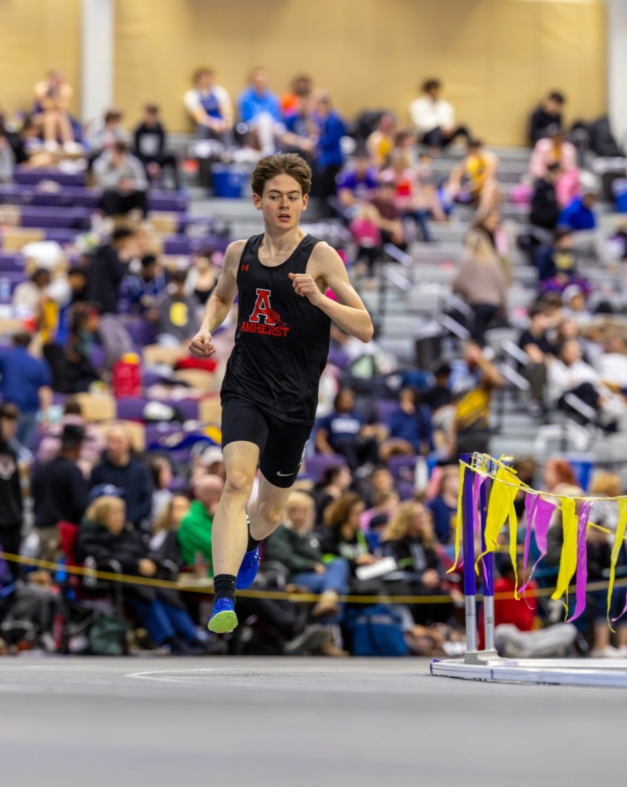

Jake Kiniry
Runner · Student · Tutor
Distance runner based in Buffalo, NY. Currently organizing a charity race and taking on tutoring students soon. See the Portfolio and Running pages for more.
Tutoring
Taking students soon — see the Portfolio page for subjects and how to get in touch.
View details